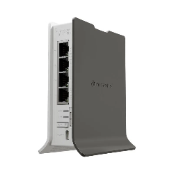

Modem
Es un dispositivo de hardware que permite la comunicación entre una red local (como la de tu casa u oficina) y una red externa, generalmente la red de tu proveedor de servicios de internet (ISP). Actúa como un traductor, convirtiendo las señales digitales que utilizan tus dispositivos en señales analógicas compatibles con la red del ISP, y viceversa.
